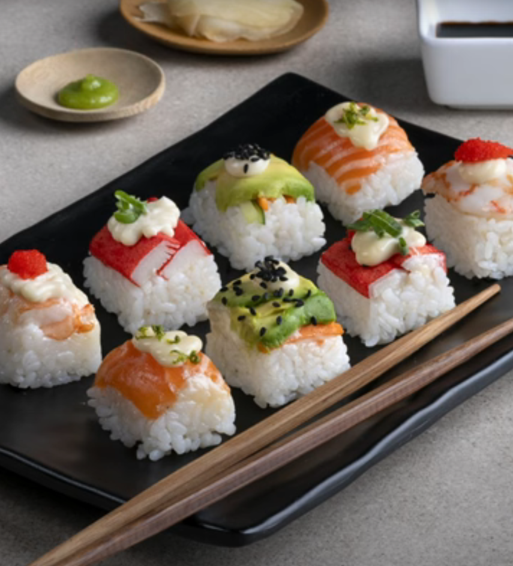

Easy ice cube tray sushi

Description
Steps
For the marinade
- Put the rice vinegar, sugar, and salt into a bowl, whisk them well until the sugar and salt are dissolved, and set the marinade aside.
For the rice
- Pour cold water into a bowl and then place a sieve over it.
- Put the rice into the sieve and stir in circular motions until the starch is released and the water turns white.
- Drain the water from the bowl, refill with clean water, and follow the same process 4-5 more times until the water runs clear and most of the starch has been removed from the rice.
- Transfer the rice to the bowl, cover it with water, and set it aside for 15 minutes.
- Drain the rice into a sieve, place it back into the bowl, and add 300 g of water.
- Cover the bowl with plastic wrap and microwave it for 10 minutes at 800 Watts.
- Remove the bowl from the microwave, take out the plastic wrap, and mix the rice with a wooden spoon.
- Cover the bowl with plastic wrap again, and set it aside for another 10 minutes.
- Pour the marinade into the bowl and mix well.
- Transfer the rice to a baking pan and spread it over the whole surface.
- Cover the pan with a wet towel, gently press it down so that it rests directly on the rice, and set the pan aside to cool well.
To assemble
- Line two 14-slot plastic ice cube trays with plastic wrap, pressing it down so it fits into each compartment.
- Cut the salmon fillet into 8 thin slices, the shrimp into 6 very small pieces, the surimi in half, the avocado into 10 thin slices, the carrot and cucumber into very thin, small sticks, and the seaweed sheet into 28 small squares.
- Transfer the cream cheese to a pastry bag, cutting off the tip, and then the mayonnaise to a squeeze bottle.
- Place a small piece of salmon into 8 of the compartments and pipe the cream cheese on top.
- In another 10 compartments, divide the avocado and the carrot and cucumber sticks.
- In 6 more compartments, divide the shrimp and top with mayonnaise. In the remaining 4 compartments, divide the surimi and the rest of the mayonnaise.
- Wet your hands with water, divide the rice among all the compartments, and press gently with your hands.
- Place a small piece of nori seaweed on top of each compartment.
- You can wrap the tray with plastic wrap and refrigerate it for up to one day.Alternatively, unmold and serve immediately by inverting the tray onto a serving board.
For the decoration
- Add a little mayonnaise to all the sushi rolls except those with salmon.
- To the salmon sushi rolls, add a bit of cream cheese.
- Garnish with flying fish roe, spring onion, black sesame seeds, or lime zest.
- Serve with soy sauce, wasabi paste, and pickled ginger.
Ingredients
For the marinade
- 25 g rice vinegar
- 15 g granulated sugar
- 5 g salt
For the rice
- 250 g rice, for sushi
- 300 g water
To assemble
- 150 g salmon fillet
- 4 shrimps, cleaned and boiled
- 4 stick(s) surimi
- 1/3 avocado(s)
- 1/3 carrot
- 1/3 cucumber
- 100 g cream cheese
- 100 g mayonnaise
- 1 seaweed, nori
For the decoration
- mayonnaise
- cream cheese
- flying fish roe
- spring onion
- sesame seeds, black
- lime zest
To serve
- soy sauce
- wasabi paste
- ginger, pickled
home